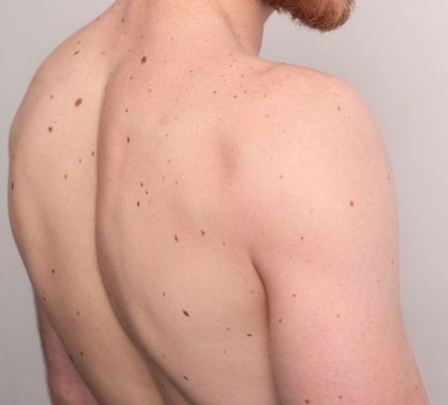

INHERITED TRACES

Taken
06.28.2019
𒊹
There's a dark patch on my thigh that I used to hide under jeans.
As a teenager, I felt it made me different in an unflattering way.
But during a summer camp, a friend showed me how to own it.
Now, it's a part of my story and my journey to self-acceptance.